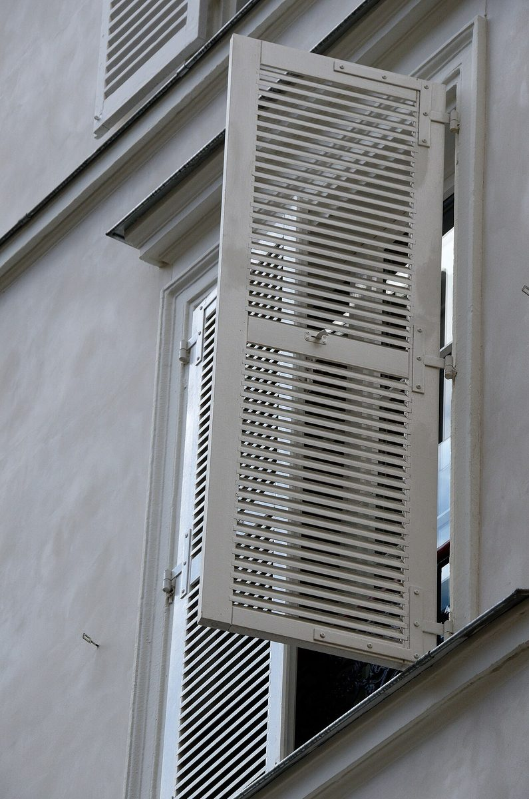
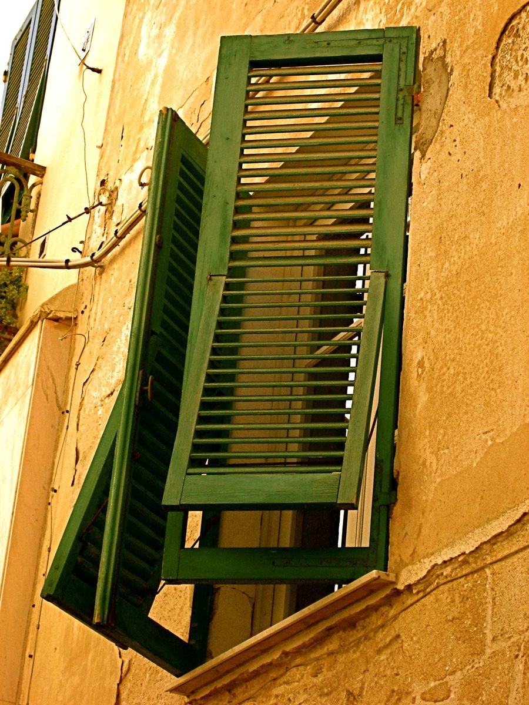
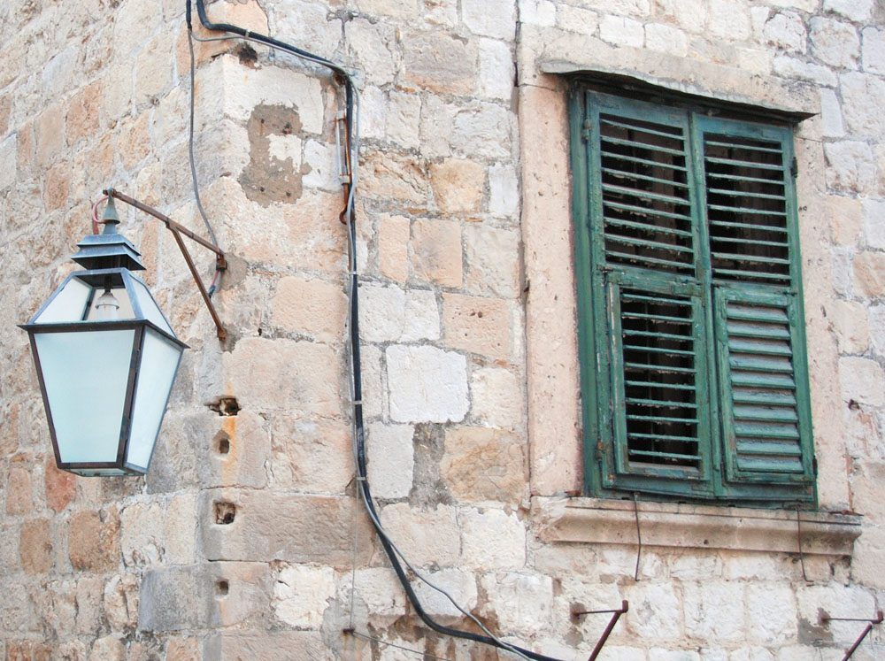

制作側の連想
「Maison」から、鎧戸を思った。
この試作のテーマは「羽根板の角度」です。制作側の連想で、お店の理念・由来とは無関係です。屋号の由来は分かりません。「Maison」という語が「家」を意味することから、家の窓につく鎧戸(よろい戸)を連想し、板の傾きを15度から75度まで変えて五つのページに割り当てました。
羽根板の角度見本
同じ一杯を、五つの角度で。
羽根板を傾けるほど、向こう側が見えてきます。マウスを重ねると全開になります。写真は国外または撮影地不明のイメージで、お店の商品ではありません。
- 15°
- 30°
- 45°
- 60°
- 75°
窓辺のイメージ
国外の鎧戸、三つ。



ご案内
確認できていること
| 所在地 | 〒565-0841 大阪府吹田市上山手町63-15 |
|---|---|
| 電話 | なし |
| 営業時間 | 準備中 |
| 定休日 | 準備中 |
| ご予約 | 準備中 |
| 駐車場 | 準備中 |
| SNS | Instagram @senri_maison_coffee |